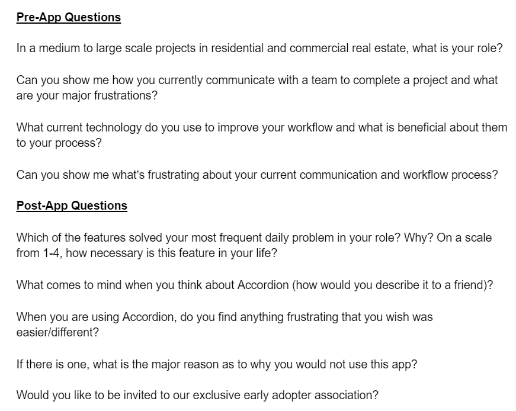
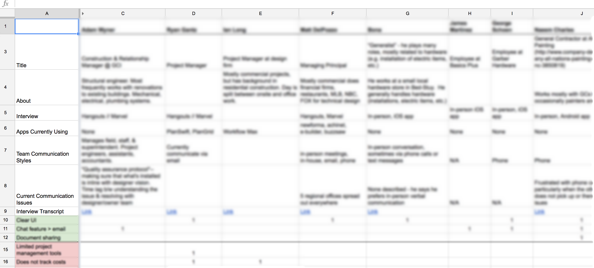
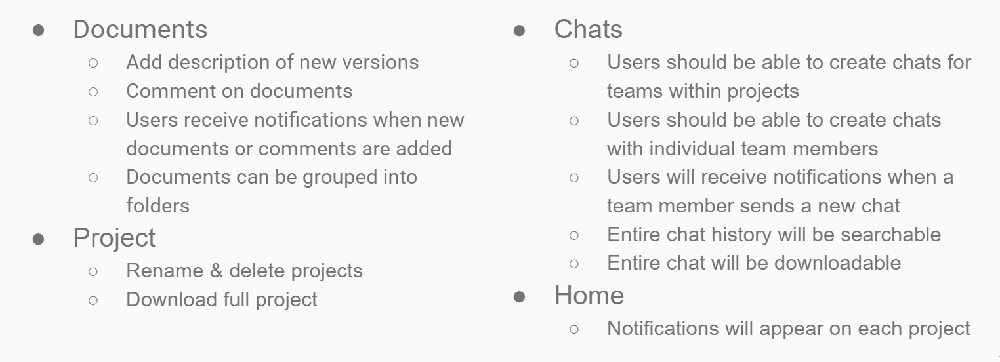
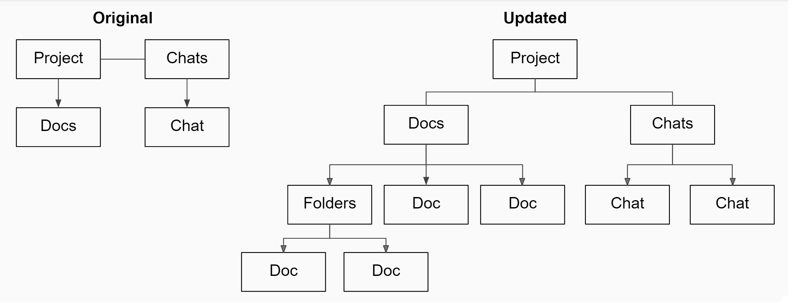

At a Glance
- Role: Project Manager // UX Researcher & Designer
- Client: Gist Digital
- Product: Accordion
- Deliverables: Updated mobile app // New web application
- Duration: June - September 2016
Gist Digital is a digital transformation company that incubates startups through its sister brand, Ignite. Accordion, one of the apps being incubated, is a collaboration platform designed to facilitate communication and document sharing for construction professionals.
As a design fellow at Startup Institute, I led a cross-functional team as to iterate on the native mobile app and create an analogous web application.
My team has so far delivered user flows and wireframes based on our collected user feedback. We continue to build the product.
Accordion’s flow was not intuitive, making simple tasks and interactions with a team difficult to accomplish. The app was also missing features necessary for a complete, easy-to-use experience.
Furthermore, Accordion’s intended audience—the construction industry—is segmented into a number of sectors with competing needs. We had to narrow the intended audience and create a product including the tools and features that this audience needed.
We first spent a considerable amount of time researching the industry and market through primary (interviews, demos) and secondary (articles, academic papers) research methods to determine product/market fit. It was essential for us to very clearly understand the various customer segments, their core pain points, and how or if Accordion was solving them. During our interviews and demos, we also tested the app for usability.
Once we identified our target audience, we utilized the research and testing from this section of the industry to reexamine Accordion’s features list. We changed certain feature functionality and added other features. During this process, we also researched examples of how these important features had been designed in other products.
To determine the segment of the construction industry that would most benefit from Accordion, we conducted interviews and demonstrations with users in different segments of the construction industry. Each interview was 15 to 30 minutes long. I was responsible for creating an outline for the interview, shown below. Between the pre- and post-app questions, the interviewers asked our users to click through the app and narrate their reactions.
The final sampling included interviews that were scheduled and unscheduled, done online and in person, and representative of not only different segments of the industry (for example, large or small construction companies, residential or commercial) but also different personnel within those segments involved in the final construction product (such as foremen, laborers, painters, plumbers, etc.). The image below is a sample of how we organized feedback from our interview transcripts.
We also conducted secondary market research by reviewing academic papers and articles about the construction industry’s current communication and documentation methods.
Our research identified small construction-related companies as the segment of the industry most exhibiting a need for Accordion. Using the information collected from this industry segment, we modified Accordion’s main features to better suit the app’s audience. Below is an overview of the changes we implemented.
To improve the product’s usability, my team researched how Accordion’s key features are presented and used in successful applications such as Trello, F8, AirBnB, Slack, Google Hangouts, Google Docs, and Facebook Messenger. This research also illuminated for us that Accordion was not adapted for either Android or iOS, and I instructed the team to optimize the app for both operating systems.
Users found Accordion’s information architecture and permanent navigation confusing. They were not able to easily switch between documents and chats for a single project. We modified the user flow to make the app more intuitive, nesting both Chats and Documents within the Project area.
I created a complete flow for the web app. While the flows for both Documents and Chats are the same for both the web and the native mobile app, the web application’s static navigation bar changes the overall user flow slightly.

We sketched the most important parts of the product as a team so that the app’s most important functionalities would remain consistent across all three platforms—Android, iOS, and web. I was then responsible for sketching Accordion’s web platform.
Below are sketches demonstrating a sampling of the web application’s features.

The project is still in progress. I’m currently supervising the Android and iOS iterations and working on the next iteration of the web application.